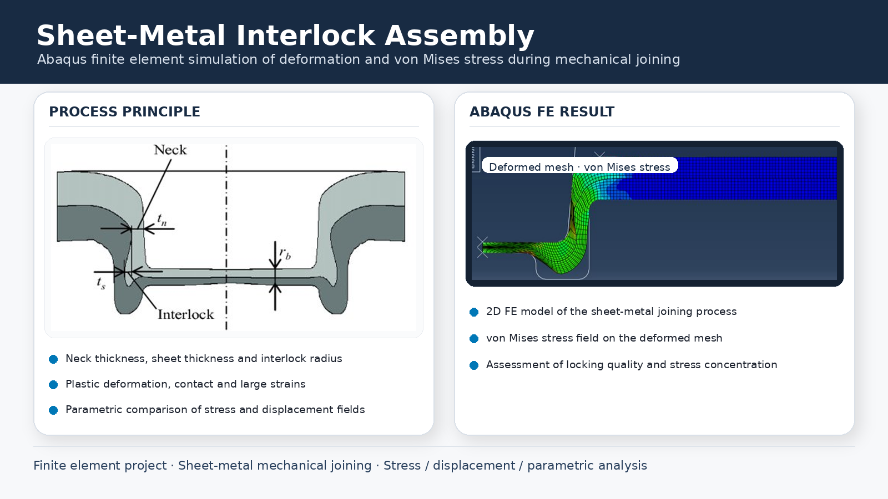

01
Process model
The sheets undergo large plastic deformation while contact zones evolve through the joining stroke. Neck thickness and interlock geometry are key quality indicators.
02
FE result
The deformed mesh shows material flow around the tooling while the von Mises field identifies the highly loaded regions. The model is useful for parametric comparisons of geometry, material and process settings.
03
Limits
Quantitative conclusions depend on the exact plastic material law, friction model and process boundary conditions, which are not packaged here as a standalone report.